Background
One month before the Student Assembly vote to approve the store, I was brought on to the team to design and build a fourteen page website for the store. The store had no previous online or social media presence, which meant that I had full creative control over the website. This version of the website is no longer live; however, the current iteration can be found at http://anabelsgrocery.org.
Creating the Website
Gathering User Requirements
At the start of the project, I set up meetings with many of the Executive Directors, including Marketing, Design, and Programming. I spoke with each of them about their vision for the website, and looked at branding templates they created in order to try and understand what the store was about. I went through all the files available to me, including the Business Plan and Branding Guidelines. Additionally, I did some research into previously existing store websites with the feel we were going for--"fresh", "young", and "accessible"--so that I could gather ideas for the Anabel's website. I designed the information architecture to make sure that the most important pages of the website (the donation page, the events page) were easy to see and navigate to.
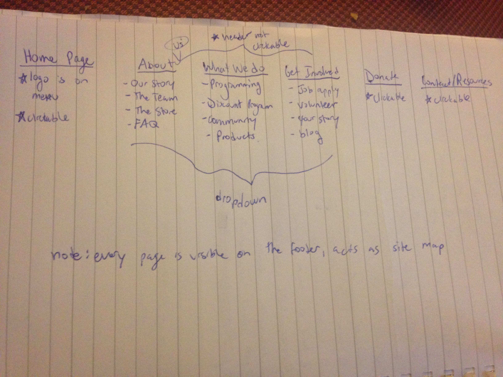
Design
Some of my wireframes and Photoshop mockups are shown below. I tried to use photos that conveyed the ideas of fresh ingredients, exciting products, and appetizing meals in order to attract students to the website. The color scheme was adopted from the store's Branding Guidelines.
I tested my designs on the most important user group--college students--before beginning to code.
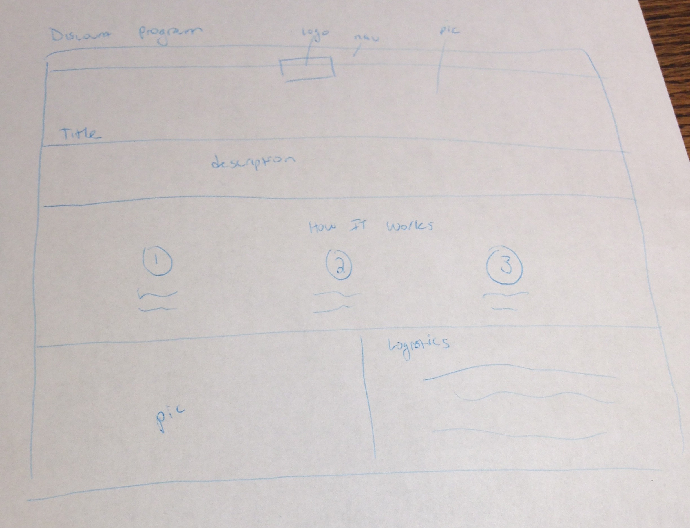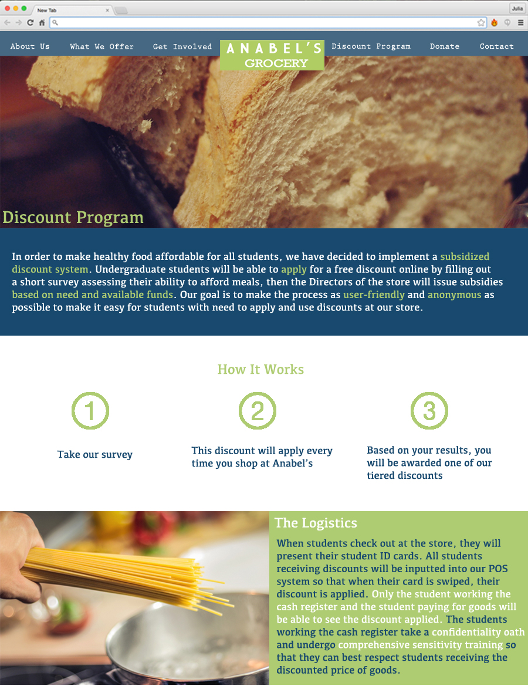
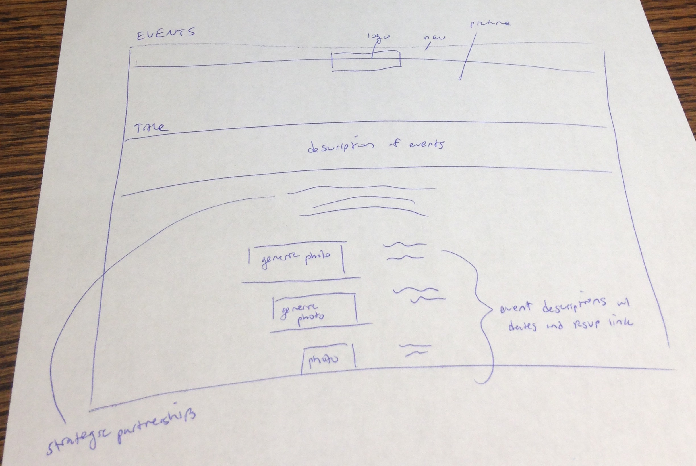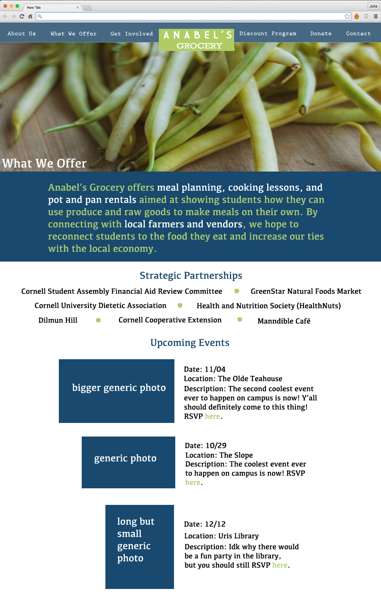
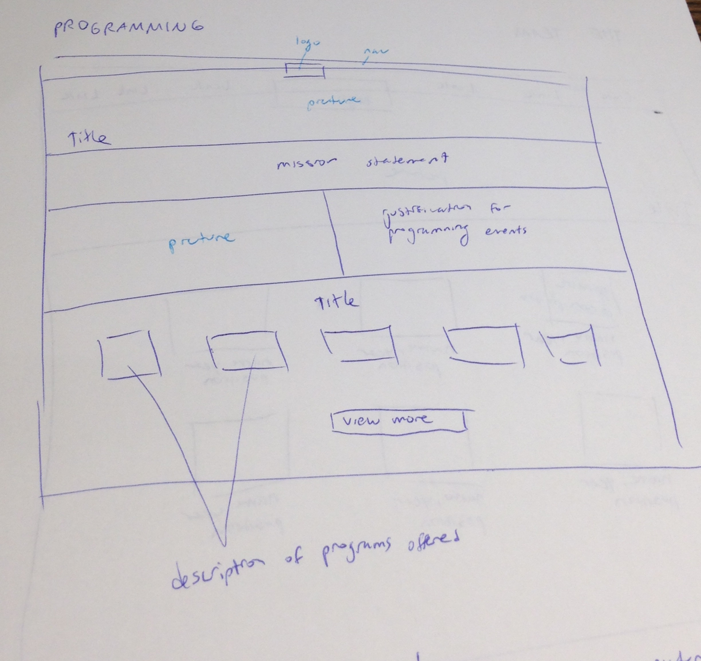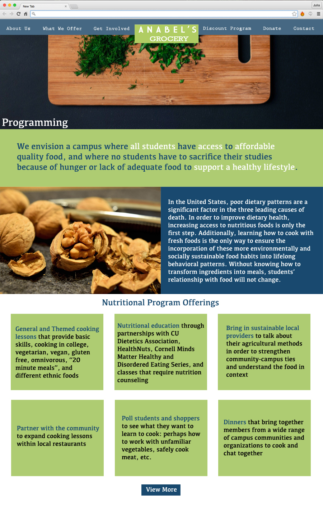
 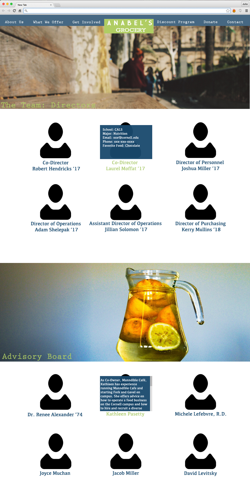
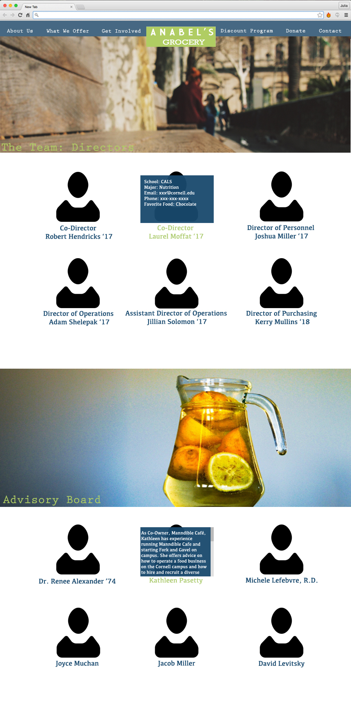
Development
I coded the website using HTML, CSS, JavaScript, JQuery, and PHP. Below, you can find screenshots of select features and a video of the website in action.
Features include: automated form to add users to the listserv, online job application portal, native blog hosting platform (built in partnership with the Intergroup Dialogue Project), fade in-out animation effects.
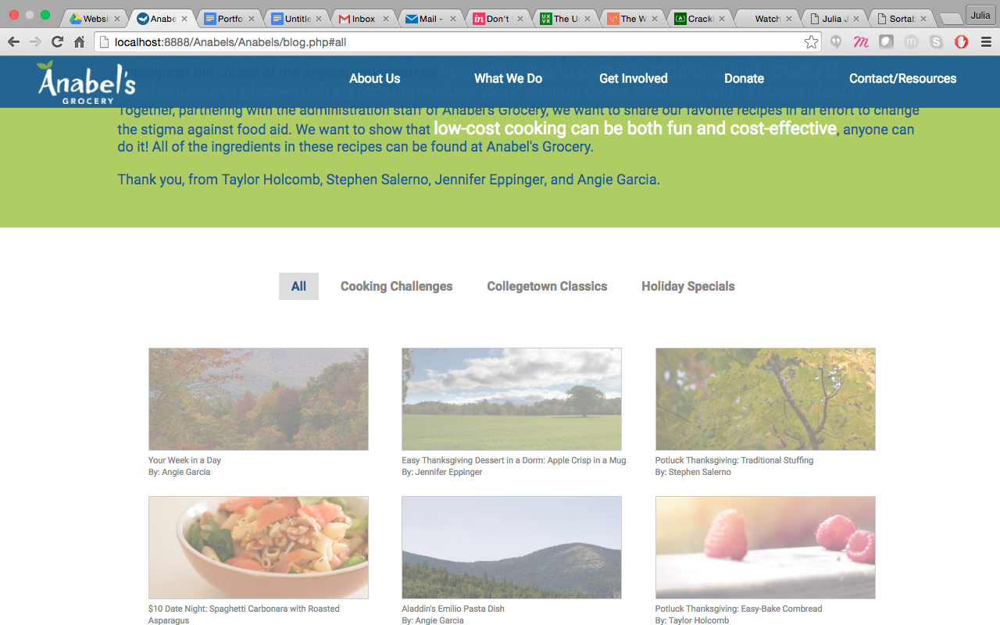
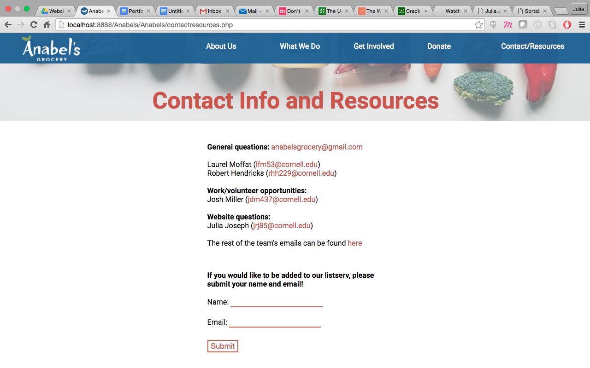
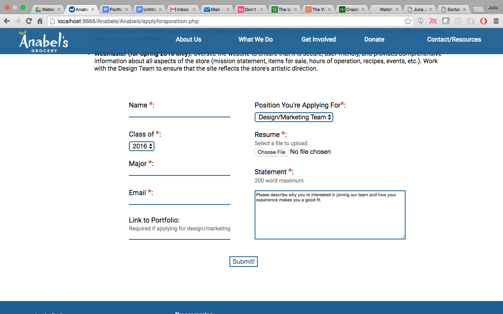
Results
This website was integral to the Student Assembly business case: we ended up receiving $340,000 in funding. Additionally, we added over 120 people to the listserv and we received over 60 job applications through the online portal!